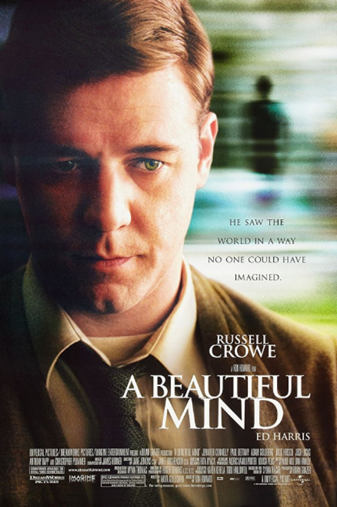

Akıl Oyunları’, orijinal adıyla ‘A Beautiful Mind’ filminin konusunu özetlemek gerekirse; öğrencilik yıllarında oyun kuramını geliştiren dahi ve Nobel ödüllü matematik profesörü John Nash, delilik ve dahilik arasındaki sınırı karıştırmaya başlamıştır. Egosu ve hırsı ön planda olan Nash, mezun olana dek paranoid şizofren olduğunun farkında bile değildir. Yönetmenliğini Ron Howard’ın yaptığı 2001 yapımı Akıl Oyunları’nın başrollerinde ise Russel Crowe, Ed Harris ve Jennifer Connelly yer alıyor. 2002 Akademi Ödülleri’nde “En İyi Film” ve “En İyi Yönetmen” kategorileri de dahil olmak üzere 6 dalda Oscar’a layık görülen ‘Akıl Oyunları’(A Beautiful Mind), aynı sene BAFTA ve Altın Küre Ödülleri’nde de önemli ödüller elde etmiştir.
 film listesi